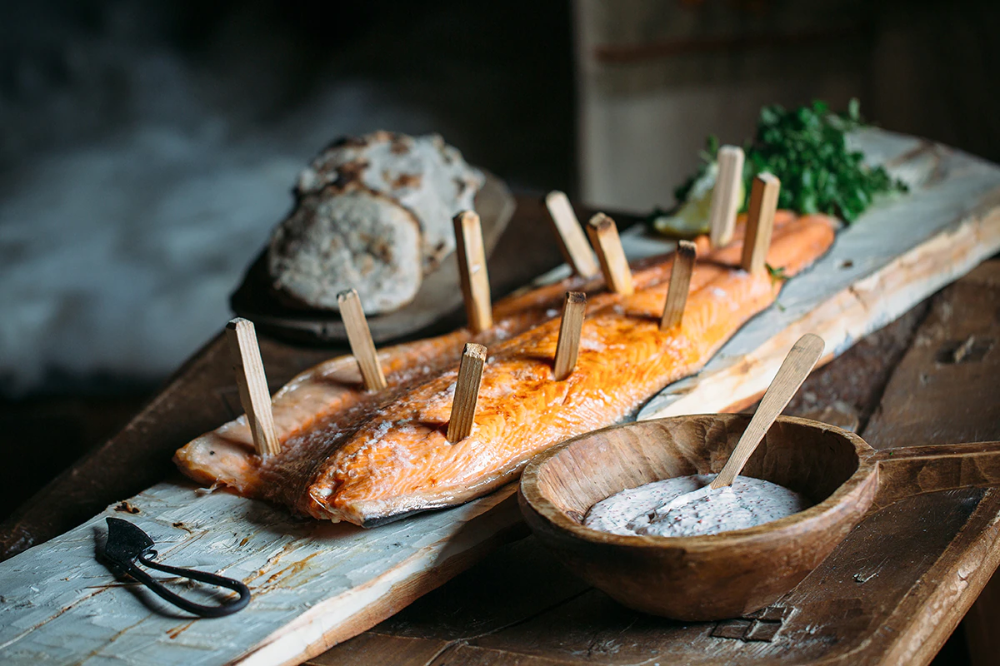

Viking salmon with flatbread and skagen sauce

“We tend to think of Vikings as ferocious warriors with carnivorous tastes, but the real Viking diet was surprisingly light and nutritious. They ate berries, vegetable soups and barley risottos, and something like this simple roasted salmon with flatbreads might have been just the kind of meal a terrifying Viking might have loved between raiding parties.” Adam Liaw, Destination Flavour Scandinavia
Nail the salmon to a plank of wood with wooden nails, flesh-side facing up. Season well with salt. Place vertically next to a fire at a distance where it becomes uncomfortable to hold your hand after 10 seconds.
Cook for 20-30 minutes, tail-side up, then flip vertically and continue for a further 20-30 minutes until just cooked through.
To make the skagen sauce, combine all the ingredients together in a bowl and refrigerate until ready to serve.
To make the Viking flatbread, combine the dry ingredients in a large bowl, then make a well in the centre. Gradually add the buttermilk and stir until the dough comes together. Transfer to a lightly floured work surface and knead until smooth. Roll the dough into 5 cm balls, then using your hands, pinch and flatten the balls to about 5 mm thick. Toast the flatbreads in a dry frying pan over high heat or on a hot stone in the fire for about 1-2 minutes each side until golden in parts and cooked through.
Serve the salmon with the skagen sauce, flatbread and watercress.
Note